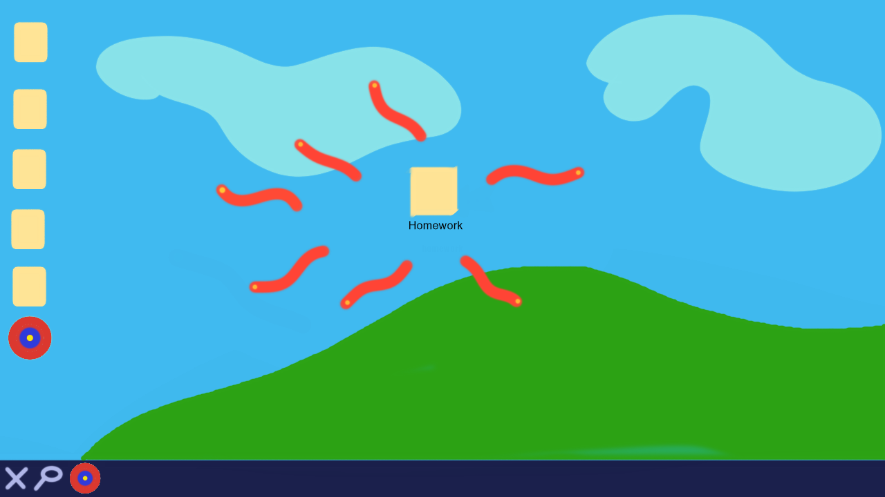
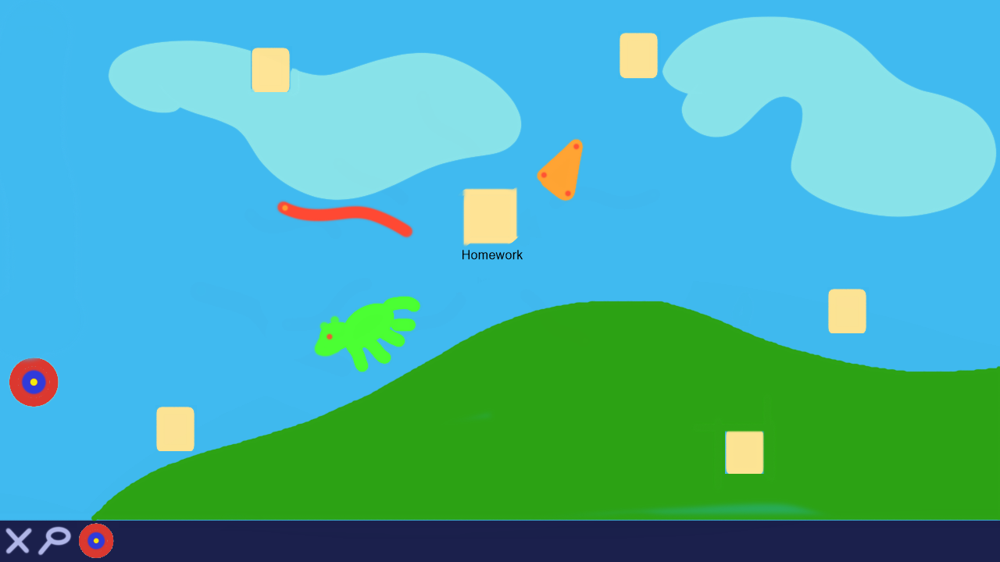

Virus Attack
Concept
It’s a game where you protect your files and folders from insidious viruses, by dragging the files out of the virus’s way.
Genre:
The genre of the game would be Causal-Defense as you would defend your files from viruses and the mechanics are simple enough to be casual.
Platform:
The game would be designed for both computer and mobile, as the core mechanics of dragging and dropping files would be accessible from both platforms.
Story:
You have downloaded ‘homework’ from a suspicious sight and now its spawning viruses to eat the rest of your files and destroy your computer. Protect your files until your antivirus can delete all the files from the homework folder.
Esthetics:
The Graphics of the game would be cartoonish. It is the simplest to implement for me and would look good on both computer and mobile. The sound would be simple tense music combine with random computer noises and get more intense as you run out of files. The game would include sounds for each virus and how they attack the files, it would have tense music as the countdown gets closer to completion or you get low on files.
Gameplay:
Drag and drop files on your desktop to make the virus miss them, done by the mouse on computer and touch on phones. Survive till the homework folder is fully deleted. A filing being completed eaten will increase the time till the homework folder is deleted. The game will have a basic instruction page on how to use the controls, but then will have to pick up on the different viruses and their patterns while playing. The player will have to learn how to predict the paths of the viruses to prevent them from eating the files. They will have to adapt to an increase in the number of viruses as the anti-Virus software gets close to deleting the 'homework' folder.
Screenshots:
The Homework folder will dispense viruses to try and corrupt all you files.
To prevent you files from being corrupted you need to move them out of the way of the virus.
Developer:
Jared Baker, Second Year, Game Design and Development Major
Skills: Coding (c#, java), Graphic Design (Photoshop, Maya, Illustrator)
Interests: Sound Design, reading, video games